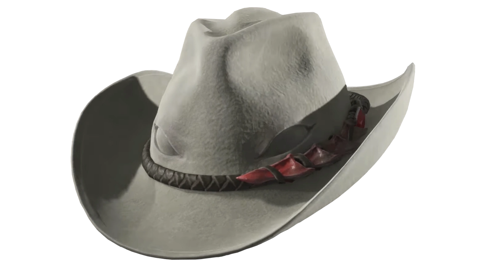

INFORMAÇÕES GERAIS
Nero é um personagem central da série Devil May Cry, introduzido em Devil May Cry 4. Ele é filho de Vergil e neto de Sparda, herdando um grande poder demoníaco, embora tenha crescido sem conhecer sua verdadeira origem. Criado na cidade de Fortuna, fez parte da Ordem da Espada, uma organização que cultuava Sparda.
Impulsivo e determinado, Nero sempre lutou movido por emoções e pelo desejo de proteger aqueles que ama, especialmente Kyrie. Diferente de Dante e Vergil, ele não busca poder por ambição, mas por necessidade. Em combate, utiliza a espada Red Queen, o revólver Blue Rose e habilidades como o Devil Bringer. Em Devil May Cry 5, após perder esse braço, passa a usar os Devil Breakers e desperta seu próprio Devil Trigger.
Ao longo da franquia, Nero representa a nova geração do legado de Sparda, equilibrando sua herança demoníaca com sentimentos humanos e amadurecendo a cada conflito que enfrenta.